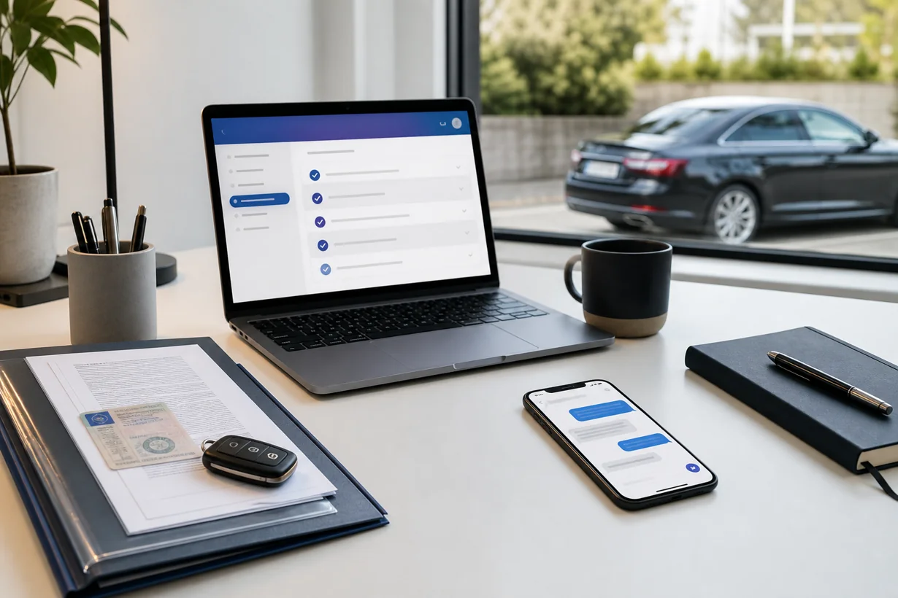

MPU-Kostenrechner
Was kann deine MPU ungefähr kosten?
Der Rechner zeigt dir einen groben Kostenrahmen für Begutachtung, Nachweise und Vorbereitung. Die tatsächlichen Kosten hängen von Anlass, Fragestellung, Begutachtungsstelle und Labor ab.

Danach siehst du eine grobe Spanne. Für deinen konkreten Fall brauchst du eine individuelle Einordnung.
Was in den drei Vorbereitungsoptionen enthalten ist, steht auf den Kursseiten: Videokurs, Video plus 2 Gespräche und Intensivbegleitung.
Quellenstand 4. November 2026: Der Rechner setzt die Begutachtung bei jedem Anlass mit demselben Rahmen von 550 bis 1.100 Euro an. Diese Spanne veröffentlichen der ADAC und die zentrale MPU-Seite von TÜV NORD. Andere Seiten derselben Anbieter nennen niedrigere Werte: das FAQ von TÜV NORD 400 bis 960 Euro und die ADAC-Seite zum Ablauf 400 bis 800 Euro. Die ADAC-Rechenbeispiele (rund 500 Euro bei 8 Punkten, 700 Euro bei Alkohol, 800 Euro bei Drogen) sind laut ADAC weder Mindest-, Durchschnitts- noch Höchstpreise. Dein Preis kann also von der angezeigten Spanne abweichen. Zur Begutachtung addiert der Rechner das gewählte Paket und die ADAC-Werte für Nachweise: 200 bis 300 Euro je Haaranalyse und 70 bis 100 Euro je Urinuntersuchung. Führerscheinantrag, zusätzliche Unterlagen und Auslagen sind nicht enthalten. Prüfe immer den konkreten Preis der gewählten Stelle.
Erst lesen, dann rechnen
Der Kostenratgeber erklärt Begutachtung, Nachweise, Vorbereitung und Führerscheinantrag mit Preisbereichen und Rechenbeispielen.
MPU-Kosten 2026 vollständig ansehen